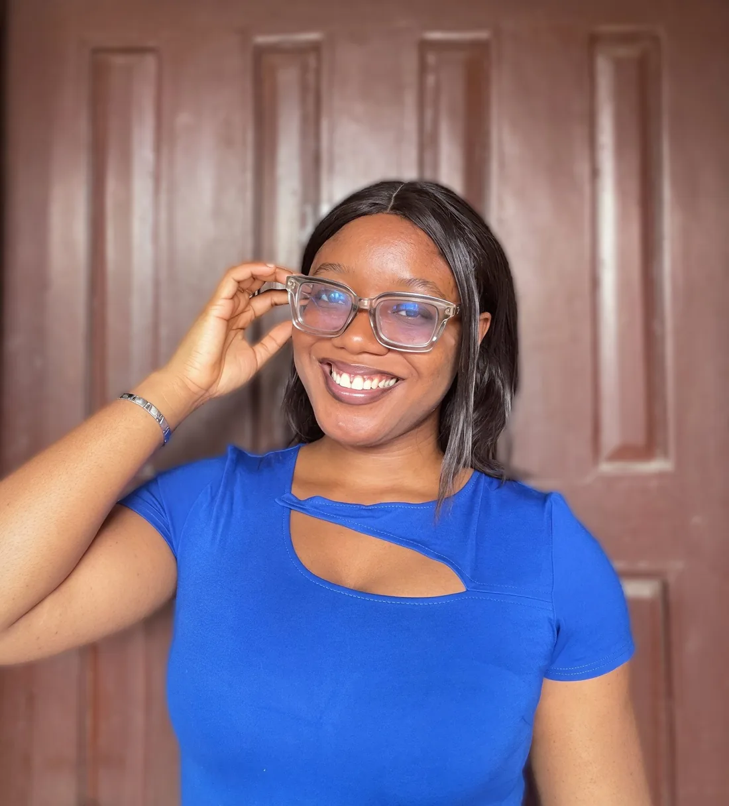

TAP TO SKIP
I’m a product designer who turns complicated, many-sided problems into apps people genuinely enjoy using. I take a feature from first research and requirements, through motion, to a handoff developers can build without guessing.
Download CV Say helloFive products across community living, craft, connectivity, advertising and fuel, each told through the context, my role, the decisions and trade-offs, and how I’d measure success.
The tools behind my work, from design and motion to the AI that speeds up the slow parts, and what I use each one for.
Four teams in nearly four years, from my first UI/UX role at SwiftAlly to owning features end to end at KEYS.
My first full UI/UX role, across three products.
Designed a marketing website and a companion mobile app to turn mobile web visitors into app downloads.
A short contract with a Canadian team, leading UI/UX for web and mobile applications.
A PropTech and community management ecosystem connecting residents, vendors, property owners and administrators.
One platform, many roles: residents, vendors, property owners and staff, across mobile and web, with public links for non-users. Three core modules: governance and operations, social and interactive, and commerce and services.
A computer science degree, plus recent short courses in AI fluency, information security and generative engine optimisation.
A little about how I think and work, the tools I like and what I do off the clock.

I ask a lot of questions, then turn the answers into clear requirements.
I can explain every decision I make.
I learn them fast. Illustrations with AI, element animations in Jitter.
I build and maintain them, so designers and developers work from the same building blocks.
Crochet, arts and crafts, and a work playlist that never stops.
Straight answers on relocation, AI use and how I work.
Yes. I’m looking for product-led teams, remote, on site or with relocation.
Yes, and I’ll say exactly where. Claude turns my screen-by-screen notes into PRDs, Figma Agent handles clean-up, and Lazy Stash was built by prompting. The decisions stay mine.
Research. Write the PRD. Design and animate. Hand off with specs and states developers can build without guessing.
Plenty, and they’re just below.
Redesigns, practice briefs and free design resources I’ve made on the side.
Bring your vision to the table, and I’ll bring it to life.